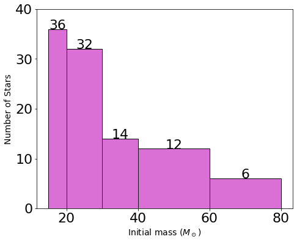
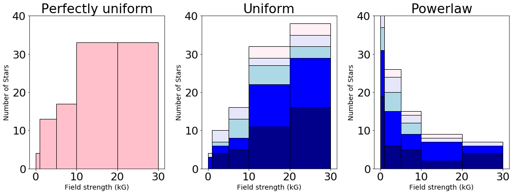
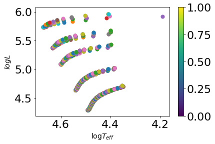
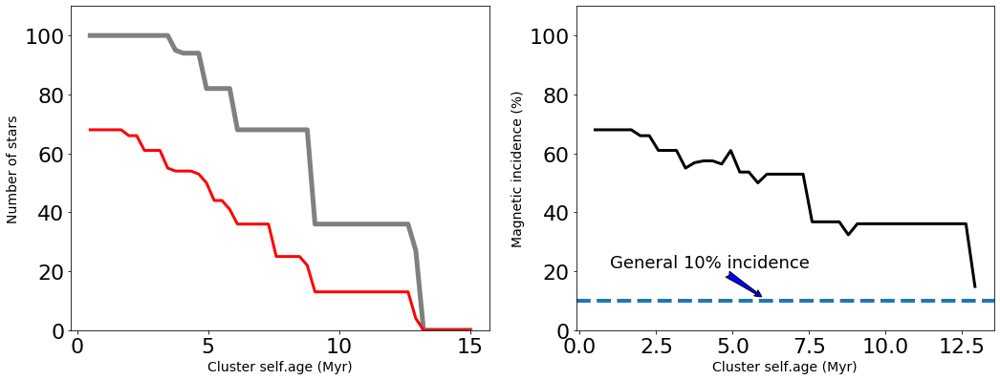
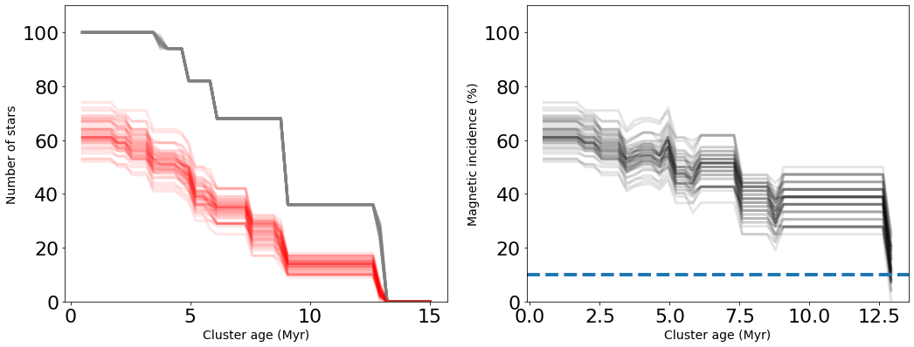
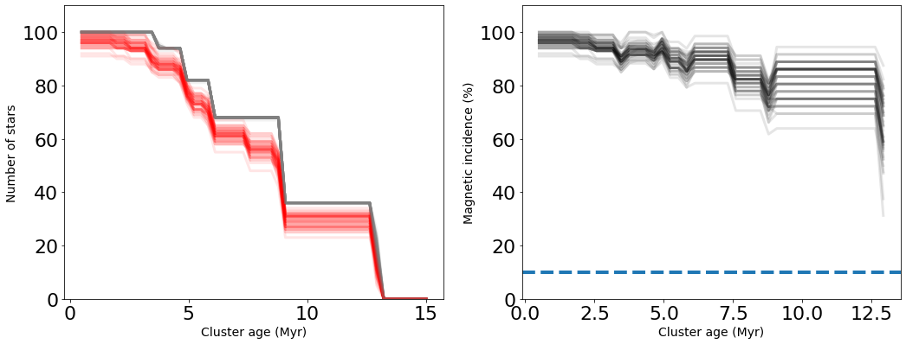

Single Population Module¶
Create the functions to generate magnetic stellar population models
[3]:
#imports
import numpy as np
from numpy.polynomial.polynomial import polyfit
import matplotlib.pyplot as plt
%matplotlib inline
import random
plt.rcParams.update({"font.size" : 14})
plt.rcParams.update({"axes.labelsize" : 14})
Function definitions¶
[4]:
#read MESA models
def read_track(file):
'''
Function that reads the MESA model files with all of its parameters
Data file must be of type .data
:par file: the file path containing the data to be read
:rtype: Returns ndarray with the parameters
'''
data = np.genfromtxt( file, skip_header=5, names=True)
return (data)
def read_track_small(file):
'''
Function that reads the MESA model with the columns of Star age, log(Teff), log(L), log(R), center_h1, Bp
Data file must be of type .data
:param file: the file path containing the data to be read
:rtype: Returns ndarray with the parameters
'''
col = [1,6,11,12,54,75]
data = np.genfromtxt( file, skip_header=5, usecols=col, names=True)
return (data)
#generate initial magnetic field functions
def get_B_uni(N, model_B_array = np.array([0, 1, 5, 10, 20]), Bmax=30.0):
'''
Function that generates a uniform disribution of initial magnetic field functions
:param N: Number of stars in the cluster
:param model_B_array: The model_B_array represent the lower edge of the magnetic field bins in kG.
:param Bmax: Bmax is the higher edge of the last bin
'''
B_bins = np.append(model_B_array, Bmax-0.01)
B_dist = np.random.random_sample(int(N))*Bmax
B_binned, edges = np.histogram(B_dist, bins=B_bins)
return(B_binned)
def get_B_pow(N, model_B_array = np.array([0, 1, 5, 10, 20]), Bmin = 0.01, Bmax = 30.0, alphaB = 0.8 ):
'''
Function that generates a power law disribution of initial magnetic field functions
:param N: Number of stars in the cluster
:param model_B_array: The model_B_array represent the lower edge of the magnetic field bins in kG.
:param Bmin: Bmax is the lower edge of the last bin
:param Bmax: Bmax is the higher edge of the last bin
:param alpha: Value for the powerlaw index
'''
C = np.random.random(int(N))
B_pow_rand = ( (Bmax**(1-alphaB)-Bmin**(1-alphaB))*C + Bmin**(1-alphaB) )**(1/(1-alphaB))
B_bins = np.append(model_B_array, Bmax-0.01)
B_binned, edges = np.histogram(B_pow_rand, bins=B_bins)
return(B_binned)
[45]:
class SingleStellarP:
def __init__(self, M_1, M_2, alpha, epsilon_0):
# This is for the masses for which we have models for
self.M_width = M_2 - M_1
self.N= np.round((epsilon_0/(1-alpha))*(M_2**(1-alpha)-M_1**(1-alpha)))
#number of stars
self.masstar = self.N[-1]
self.totstar = np.sum(self.N)
def populhist(self):
fig, ax = plt.subplots(1,1, figsize=(15/2,6))
plt.rcParams.update({'font.size': 22})
#ax.scatter(M_1, N)
ax.set_xlabel('Initial mass ($M_\odot$)')
ax.set_ylabel('Number of Stars')
ax.bar(M_1, self.N, width= self.M_width, align='edge', color='orchid', edgecolor = 'k')
print(['{}'.format(x) for x in self.N])
for i in range(0, M_1.size):
ax.text(M_1[i]+self.M_width[i]/2, self.N[i], '{:0.0f}'.format(self.N[i]), ha='center' )
ax.set_ylim(0,40)
def initialbfunc(self, model_B_array):
fig, ax = plt.subplots(1,3, figsize=(15,6))
plt.rcParams.update({'font.size': 22})
for item in ax:
item.set_xlabel('Field strength (kG)')
item.set_ylabel('Number of Stars')
ax[0].set_title('Perfectly uniform')
ax[1].set_title('Uniform')
ax[2].set_title('Powerlaw')
for item in ax:
item.set_ylim(0,40)
B_bins = np.append(model_B_array, 29.99)
B_uniform = np.linspace(0, 29.99, 100)
B_binned, edges = np.histogram(B_uniform, bins=B_bins)
ax[0].bar(model_B_array, B_binned, width=B_bins[1:]-B_bins[0:-1], bottom=0, align='edge', color='pink', edgecolor = 'k')
#print(np.sum(B_binned))
mass_color = ['darkblue', 'blue', 'lightblue', 'lavender', 'lavenderblush']
B_binned_total = np.zeros(model_B_array.size)
for item, color in zip(self.N, mass_color):
#print(item)
B_binned = get_B_uni(item)
#print(B_binned)
ax[1].bar(model_B_array, B_binned, width=B_bins[1:]-B_bins[0:-1],
bottom=B_binned_total, align='edge', color=color, edgecolor = 'k')
B_binned_total = B_binned_total + B_binned
B_binned_total = np.zeros(model_B_array.size)
for item, color in zip(self.N, mass_color):
#print(item)
B_binned = get_B_pow(item)
#print(B_binned)
ax[2].bar(model_B_array, B_binned, width=B_bins[1:]-B_bins[0:-1],
bottom=B_binned_total, align='edge', color=color, edgecolor = 'k')
B_binned_total = B_binned_total + B_binned
plt.tight_layout()
def singleclustersim(self, path, model_B_array, B_limit = 500.0):
fig, ax = plt.subplots(1,1)
self.age=np.linspace(0.5,15, 50)*1e6
self.detected = np.zeros( (self.age.size, M_1.size) )
self.N_real = np.zeros( (self.age.size, M_1.size) ) # array to keep track of the number of stars (to account for stars off the MS)
ms_criteria = 0.01
for i in range(0, self.N.size):
if self.N[i]>0:
print('There are {} stars of {} Msun'.format(self.N[i], M_1[i]))
########################
# This is the line to change to switch from powerlaw to uniform.
########################
B_binned = get_B_pow(self.N[i])
########################
########################
print(' And their field values are {}'.format(B_binned))
for j in range(0, model_B_array.size ):
if B_binned[j]>0:
name = path.format( M_1[i], model_B_array[j] )
print(name)
data = read_track_small(name)
# Cut the tracks to the MS
ms=np.where(data['center_h1']>ms_criteria)
data = data[ms]
for k in range(0,self.age.size):
n=np.where(data['star_age']>=self.age[k])
if n[0].size>0:
self.N_real[k,i] = self.N_real[k,i]+ B_binned[j] # Still on the MS, add to the tally.
if data['Bp'][n[0][0]] >= B_limit:
self.detected[k,i] = self.detected[k,i] + B_binned[j]
for item in range(0,B_binned[j]): # there are B_binned[j] stars with that field strength
#print(n[0][0])
#print(data['Bp'])
#print(data['log_Teff'][n[0][0]])
#print(data['log_L'][n[0][0]])
vero=ax.scatter(data['log_Teff'][n[0][0]], data['log_L'][n[0][0]],
cmap='plasma', vmin=0, vmax=2e4, s=50)
ax.invert_xaxis()
ax.set_xlabel(r'$\log{T_{eff}}$')
ax.set_ylabel(r'$log{L}$')
plt.colorbar(vero)
#print( np.sum(self.N_real, axis=1) )
#print( np.sum(detected, axis=1) )
#print( np.sum(detected, axis=1)/np.sum(N_real, axis=1))
def displaymaginc(self):
try:
not_N_real = (self.N_real is None)
if not_N_real:
raise ValueError
except ValueError:
print("You must call singleclustersim() before calling displaymaginc()")
return
fig, ax = plt.subplots(1,2, figsize=(15,6))
plt.rcParams.update({'font.size': 22})
ax[0].plot(self.age/1e6, np.sum(self.N_real, axis=1), label='MS stars', lw=5, c='0.5')
#ax.scatter(self.age/1e6, np.sum(N_real, axis=1), zorder=2000)
ax[0].plot(self.age/1e6, np.sum(self.detected, axis=1), label='Detected stars', lw=3, c='red')
ax[1].plot(self.age/1e6, np.sum(self.detected, axis=1)/np.sum(self.N_real, axis=1)*100, lw=3, c='k',\
label='Magnetic fraction infered')
ax[1].axhline(y=10, ls='--', lw=4)
#ax[0].annotate('Stars past the MS\nare not in the\nsimulated survey', xy=(8, 70), xytext=(10, 80),
# arrowprops=dict(facecolor='0.5', arrowstyle='fancy'),
# verticalalignment='top', horizontalalignment='left')
ax[1].annotate('General 10% incidence', xy=(6, 11), xytext=(1, 20),
arrowprops=dict(facecolor='blue', arrowstyle='fancy'),
verticalalignment='bottom', horizontalalignment='left',
fontsize=18
)
ax[0].set_ylabel('Number of stars')
ax[1].set_ylabel('Magnetic incidence (%)')
for item in ax:
item.set_ylim(0,110)
item.set_xlabel('Cluster self.age (Myr)')
#ax[0].legend(loc=0, fontsize=18)
plt.tight_layout()
def MCclustersim(self, n_MC, path, model_B_array, B_limit = 500.0, powlaw = True):
ms_criteria = 0.01
self.n_MC = n_MC
self.age=np.linspace(0.5,15, 50)*1e6
self.detected = np.zeros( (self.age.size, M_1.size, n_MC) )
self.N_real = np.zeros( (self.age.size, M_1.size, n_MC) ) # array to keep track of the number of stars (to account for stars off the MS)
for MC in range(0,n_MC):
#print(MC)
for i in range(0, self.N.size):
if self.N[i]>0:
########################
# This is the line to change to switch from powerlaw to uniform.
########################
if powlaw == True:
B_binned = get_B_pow(self.N[i])
for j in range(0, model_B_array.size ):
if B_binned[j]>0:
name = path.format( M_1[i], model_B_array[j] )
data = read_track_small(name)
# Cut the tracks to the MS
ms=np.where(data['center_h1']>ms_criteria)
data = data[ms]
for k in range(0,self.age.size):
n=np.where(data['star_age']>=self.age[k])
if n[0].size>0:
self.N_real[k,i, MC] = self.N_real[k,i, MC]+ B_binned[j] # Still on the MS, add to the tally.
if data['Bp'][n[0][0]] >= B_limit:
self.detected[k,i,MC] = self.detected[k,i,MC] + B_binned[j]
else:
B_binned = get_B_uni(self.N[i])
for j in range(0, model_B_array.size ):
if B_binned[j]>0:
name = path.format( M_1[i], model_B_array[j] )
data = read_track_small(name)
# Cut the tracks to the MS
ms=np.where(data['center_h1']>ms_criteria)
data = data[ms]
for k in range(0,self.age.size):
n=np.where(data['star_age']>=self.age[k])
if n[0].size>0:
self.N_real[k,i, MC] = self.N_real[k,i, MC]+ B_binned[j] # Still on the MS, add to the tally.
if data['Bp'][n[0][0]] >= B_limit:
self.detected[k,i,MC] = self.detected[k,i,MC] + B_binned[j]
def dispMCmag(self):
try:
not_MC = (self.n_MC is None)
if not_MC:
raise ValueError
except ValueError:
print("You must call MCclustersim() before calling displaymaginc()")
return
fig, ax = plt.subplots(1,2, figsize=(15,6))
plt.rcParams.update({'font.size': 22})
for MC in range(0,self.n_MC):
ax[0].plot(self.age/1e6, np.sum(self.N_real[:,:,MC], axis=1), alpha=0.1,label='Number of MS stars', lw=3, c='0.5')
ax[0].plot(self.age/1e6, np.sum(self.detected[:,:,MC], axis=1), \
alpha=0.1, label='Number of detected stars', lw=3, c='red')
ax[1].plot(self.age/1e6, np.sum(self.detected[:,:,MC], axis=1)/np.sum(self.N_real[:,:,MC], axis=1)*100, \
alpha=0.1, c='k', label='Magnetic fraction infered',lw=3 )
ax[0].set_ylabel('Number of stars')
ax[1].set_ylabel('Magnetic incidence (%)')
for item in ax:
item.set_ylim(0,110)
item.set_xlabel('Cluster age (Myr)')
ax[1].axhline(y=10, ls='--', lw=4)
plt.tight_layout()
[46]:
M_1 = np.array([ 15, 20, 30, 40, 60 ])
M_2 = np.array([ 20, 30, 40, 60, 80 ])
alpha=2.35 # Using Salpeter IMF
#epsilon_0=2860 # For 50 stars
epsilon_0=5820 # For 100 stars
file_path = r'D:\Summer2021\Magneticf\M{:0.0f}Z14B{:0.0f}.data'
b_model = np.array([0, 1, 5, 10, 20])
prueba = SingleStellarP(M_1, M_2, alpha, epsilon_0)
prueba.populhist()
prueba.initialbfunc(b_model)
prueba.singleclustersim(file_path, b_model)
prueba.displaymaginc()
['36.0', '32.0', '14.0', '12.0', '6.0']
There are 36.0 stars of 15 Msun
And their field values are [12 11 5 4 4]
D:\Summer2021\Magneticf\M15Z14B0.data
D:\Summer2021\Magneticf\M15Z14B1.data
D:\Summer2021\Magneticf\M15Z14B5.data
D:\Summer2021\Magneticf\M15Z14B10.data
D:\Summer2021\Magneticf\M15Z14B20.data
There are 32.0 stars of 20 Msun
And their field values are [14 6 3 3 6]
D:\Summer2021\Magneticf\M20Z14B0.data
D:\Summer2021\Magneticf\M20Z14B1.data
D:\Summer2021\Magneticf\M20Z14B5.data
D:\Summer2021\Magneticf\M20Z14B10.data
D:\Summer2021\Magneticf\M20Z14B20.data
There are 14.0 stars of 30 Msun
And their field values are [2 4 3 3 2]
D:\Summer2021\Magneticf\M30Z14B0.data
D:\Summer2021\Magneticf\M30Z14B1.data
D:\Summer2021\Magneticf\M30Z14B5.data
D:\Summer2021\Magneticf\M30Z14B10.data
D:\Summer2021\Magneticf\M30Z14B20.data
There are 12.0 stars of 40 Msun
And their field values are [3 5 1 1 2]
D:\Summer2021\Magneticf\M40Z14B0.data
D:\Summer2021\Magneticf\M40Z14B1.data
D:\Summer2021\Magneticf\M40Z14B5.data
D:\Summer2021\Magneticf\M40Z14B10.data
D:\Summer2021\Magneticf\M40Z14B20.data
There are 6.0 stars of 60 Msun
And their field values are [1 2 0 2 1]
D:\Summer2021\Magneticf\M60Z14B0.data
D:\Summer2021\Magneticf\M60Z14B1.data
D:\Summer2021\Magneticf\M60Z14B10.data
D:\Summer2021\Magneticf\M60Z14B20.data
D:\Anaconda\lib\site-packages\ipykernel_launcher.py:147: RuntimeWarning: invalid value encountered in true_divide




[47]:
prueba.MCclustersim(50, file_path, b_model)
prueba.dispMCmag()
D:\Anaconda\lib\site-packages\ipykernel_launcher.py:250: RuntimeWarning: invalid value encountered in true_divide

[48]:
prueba.MCclustersim(50, file_path, b_model, powlaw = False)
prueba.dispMCmag()
D:\Anaconda\lib\site-packages\ipykernel_launcher.py:250: RuntimeWarning: invalid value encountered in true_divide

[ ]: